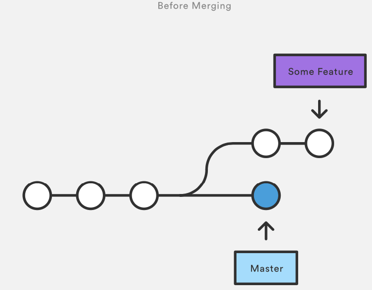
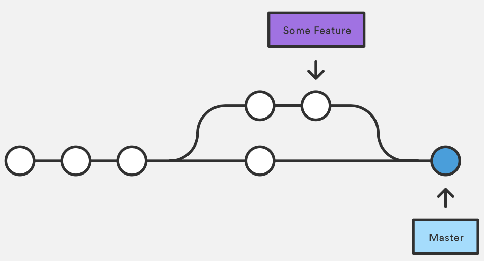

$ cat datei.txt # Original
Einfacher Text
in zwei ZeilenVCS 3
Mergen
Doppelbedeutung
Doppelbedeutung merge
Zusammenfügen von zwei Dateiversionen
ggf. Auflösen von Konflikten
Zusammenfügen von zwei (oder mehr) Branches
alle Änderungen des einen Branches werden auf den andern Branch übertragen
_
Beides wird mit
git mergeangestoßenBegriff: gemeinsamer Vorfahr (most recent common ancestor) Commit
git merge-baseBefehl hilft dabei
Falls automatische Konflikauflösung nicht funktioniert, muss der User eingreifen
Dateikonflikte
Git kann die meisten Dateikonflikte automatisch auflösen
$ cat datei.txt # von Branch 1
Einfacher Text der
in zwei Zeilen$ cat datei.txt # von Branch 2
Einfacher Text
in drei Zeilen
steht$ cat datei.txt # nach dem Merge
Einfacher Text der
in drei Zeilen
stehtManuelle Dateikonflikte
Wenn Git einen Konflikt nicht automatisch auflösen kann, muss man manuell auflösen:
$ git merge branch-1
CONFLICT (content): Merge conflict in datei.txt
Automatic merge failed; fix conflicts and then commit the result.
$ git status
On branch master
You have unmerged paths.
(fix conflicts and run "git commit")
Unmerged paths:
(use "git add <file>..." to mark resolution)
both modified: datei.txt
no changes added to commit (use "git add" and/or "git commit -a")Manuelle Dateikonflikte
Git ändert die Datei und speichert alle nicht-gemergten Stellen innerhalb der Datei ab.
mit sog. Standard Konflikt-Markern
git add datei.txtMarkiert die Datei als "Konflikte gelöst"git merge --abortVersetz alles in den Zustand vorhergit mergetoolkann eine bessere Sicht auf die Konflikte liefern
Manuelle Dateikonflikte
$ cat datei.txt # Original
Einfacher Text
in zwei Zeilen$ cat datei.txt # von Branch 1
Einfacher Text
in drei Zeilen$ cat datei.txt # von Branch 2
Einfacher Text
in vier Zeilen$ cat datei.txt # nach dem Merge
Einfacher Text der
<<<<<<< HEAD
in drei Zeilen
=======
in vier Zeilen
>>>>>>> branch-2Merge von Branches
Zusammenfügen von zwei (oder mehr) Branches
alle Änderungen des einen Branches werden auf den andern Branch übertragen
zwei Arten
3-Way-Merge
Fast-Forward-Merge
Fast-Forward-Merge
ein Merge führt zwei Branches zusammen
ein Merge wird immer zu dem aktiven Branch hin ausgeführt
Nur wenn es einen linearen Pfad von der Spitze des Ziel-Branches zur Spitze des Quell-Branches gibt
Verändert niemals Dateien
$ git checkout master # Aktivieren des ‚Ziel‘-Branches
$ git merge feature # Startet merge von allen Commits auf
$ # Branch feature zu Branch master
$ git merge --ff-only feature # Starte merge nur, wenn FF möglich istFast-Forward-Merge

Fast-Forward-Merge

3-Way-Merge
ein Merge führt zwei Branches zusammen
ein Merge wird immer zu dem aktiven Branch hin ausgeführt
wurden in beiden Branches Änderungen vorgenommen, entsteht ein neuer Commit
$ git checkout master # Aktivieren des ‚Ziel‘-Branches
$ git merge feature # Startet merge von ‚Quell‘-Branch
$ git merge --abort # Abbrechen eines begonnenen Merges
$ # (der Konflikte hat)
$ git reset --hard ORIG_HEAD # Macht ein versehentlichen und
$ # abgeschlossenen Merge rückgängig3-Way-Merge

3-Way-Merge

Rebase
Ist einer Alternative zum 3-Way-Merge
Vermeidet den Merge-Commit, indem die Vorraussetzung für ein Fast-Forward geschaffen wird
ein Rebase wird immer auf dem aktiven Branch durchführt
Verändert alle Commits, die bisher auf dem aktiven Branch gemacht wurden
Ziel und Quelle sind hier anders, als beim Merge
ggf. manuelle Konfliktbehebung, wie beim Merge nötig
Rebase Kommandos
## Aktivieren des Branches, der rebased werden soll
$ git checkout feature
## Startet rebase: neue Basis für den aktiven Branch
$ git rebase master
## Macht ein versehentliches Rebase rückgängig
$ git reset --hard ORIG_HEAD
## fügt Datei, die manuell bereinigt werden musste, zum Rebase hinzu
$ git add former-conflicted.txt
## Fortsetzen des Rebasing, nachdem Konflikte bereinigt wurden
$ git rebase –-continue
## Abbruch des Rebasing (jederzeit möglich)
$ git rebase --abortRebase Start

So würde ein 3-Way-Merge aussehen
$ git merge master
Stattdessen: rebase
$ git checkout experiment
$ git rebase master
gefolgt von: fast-forward
$ git merge master
Rebase Vorteile
kein unnötiger commit C5
klar lesbare Historie
Wenn jmd. anderes deine Änderung integrieren soll, dann ist es einfacher, wenn du einen Rebase machst, anstatt dass er einen 3-Way-Merge machen muss.
Verlagern der Verantwortung
Quellen
Atlassian Tutorials https://www.atlassian.com/git/tutorials/using-branches
Git Pro Buch - Was ist ein Branch https://git-scm.com/book/de/v1/Git-Branching-Was-ist-ein-Branch
Git Pro Buch - Rebasing https://git-scm.com/book/de/v1/Git-Branching-Rebasing